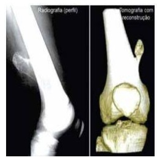
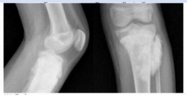
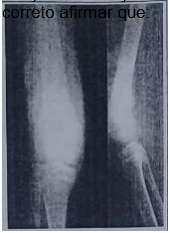
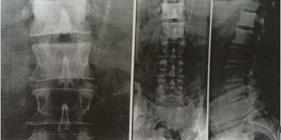
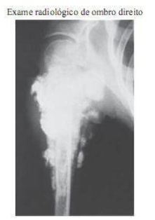

Questão 1 · Osteomielite · Pediatria · 4000130439Lactente de 18 meses é trazido ao hospital por queixas de febre e dor em membro inferior direito de início há 3 dias, que evoluiu com claudicação e atualmente recusa em deambular. Ao exame apresenta edema, eritema e calor em extremidade distal do fêmur. Radiogra a do membro demonstra deslocamento dos planos musculares profundos em relação à metá se adjacente, comparado ao membro oposto. Sobre esta situação, analise as alternativas abaixo. I – O melhor exame para confirmar o esclareci- mento desta situação é a ressonância magnética. II – É essencial obter material para culturas (sangue, osso) antes da administração de antibióticos, mesmo que haja atraso em algumas horas para o início dos antibióticos. III – Para a maioria das infecções a duração da antibioticoterapia é de 21 a 28 dias, de forma endovenosa por todo o período. Estão corretas as assertivas
A I apenas.
B I e II apenas.
C I e III apenas.
D II e III apenas.
E I, II e III.
Questão 2 · Osteomielite · Neurologia · 4000130038Paciente de 46 anos, previamente hígido, relata 2 semanas de evolução de dor em coluna torácica, contínua, seguida de febre aferida. Quando da investigação realizou ressonância que demonstrou alteração de T5 e T6, com hipossinal em T1 com perda de definição de corpos e planaltos vertebrais e hiperssinal do disco e corpos vertebrais em T2. Foi feita punção guiada por tomografia que evidenciou cocos gram positivos. Considerando a hipótese diagnóstica principal, assinale a assertiva correta.
A Leucocitose e neutrofilia têm altos níveis de sensibilidade diagnóstica.
B A biopsia guiada por tomografia tem alta sensibilidade e exclui a doença quando negativa.
C VHS e proteína C reativa têm baixa sensibilidade, não podendo ser usados para excluir a condição.
D A tomografia por emissão de pósitrons (FDG-PET) apresenta alta acurácia e é alternativa à ressonância.
E A radiografia simples apresenta alta sensibilidade na detecção da condição, com menor custo em relação à ressonância.
Questão 3 · Metástases Ósseas · 4000124109Mulher, 60 anos, apresenta dorsalgia persistente, com sensibilidade à palpação local e progressão para paraparesia. Ressonância magnética da coluna dorsal revela massa sólida no corpo da 7ª vértebra dorsal com extensão aos pedículos, determinando compressão medular e sem evidência de envolvimento discal. O diagnóstico principal para esse caso é de:
A metástase.
B tuberculose.
C espondilodiscite aguda.
D hérnia discal.
E fratura vertebral.
Questão 4 · Metástases Ósseas · 4000123469Assinale a assertiva correta sobre o perfil epidemiológico das metástases ósseas de carcinomas.
A Tumores de tireoide e intestino são os principais responsáveis por metástases ósseas.
B Osteossarcoma convencional é 10-15 vezes mais prevalente do que metástases ósseas em pacientes com mais de 65 anos.
C Metástases ósseas são consideradas o tumor ósseo maligno mais comum da espécie humana.
D Estima-se que menos de 10% dos portadores de carcinoma tenham metástases ósseas no momento do óbito.
E Em sua maioria, as metástases ósseas de origem oculta são provenientes de carcinomas da próstata.
Questão 5 · Osteossarcoma · 4000072794Osteossarcoma é definido como um tumor maligno formador de osso que contém um estroma francamente sarcomatoso, em relação a este tipo de sarcoma podemos afirmar que:
A É o sarcoma radioinduzido mais frequente.
B Dificilmente acomete os ossos longos dos membros inferiores.
C O sinal radiológico característico é a lesão permeativa com reação periosteal lamelar, aspecto de “casca de cebola”.
D A presença de metástase pulmonar contraindica o tratamento cirúrgico radical.
E O diagnóstico histopatológico pode ser confirmado pela presença das rosetas de Homer Wright.
Questão 6 · Sarcoma de Ewing · 4000052909Escolar de 10 anos apresenta-se com dor em membro inferior direito há 2 meses, que vem aumentando progressivamente, agora limitando os movimentos, sem febre. Ao exame observa-se um aumento de volume de metá se de fêmur direito, doloroso à palpação. Realizado raio X que revela destruição óssea com margens pouco definidas, associada ao descolamento do periósteo com aspecto de “casca de cebola”. Analise as alternativas abaixo sobre este caso. I - A ressonância magnética é o exame mais adequado para complementar o diagnóstico. II - O local mais acometido por metástases é o fígado. III - Após confirmação do diagnóstico por biópsia o paciente deve ser submetido ao tratamento quimioterápico antes do tratamento cirúrgico local. IV Existem altas taxas de cura, mesmo nos pacientes metastáticos. Estão corretas apenas as alternativas
A I e II.
B I e III.
C II e III.
D II e IV.
E I, III e IV.
Questão 7 · Osteomielite · 4000030659Em uma radiogra a da perna, foram observadas lesões na metá se e na epí se distais da tíbia, com achados compatíveis com osteomielite aguda. Considerando a localização da lesão, a idade do paciente é, mais provavelmente, de:
A um mês.
B dez anos.
C quarenta anos.
D oitenta anos.
Questão 8 · Mieloma múltiplo MM · Tumores ósseos · Diagnósticos dif erenciais · 4000023726Um paciente de 75 anos de idade procurou atendimento por diminuição do volume urinário e intolerância aos esforços, associada a dor torácica ventilatório-dependente e a dor lombar de forte intensidade. Realizou exames de laboratório, que evidenciaram: hemoglobina = 8,6 g/dL, hematócrito = 25%, leucócitos = 6.600/mm3, sem particularidades no diferencial, plaquetas = 190 mil/mm3, creatinina = 4,51 mg/dL, potássio = 6,3 mEq/L, cálcio sérico corrigido = 13 mg/dL, ureia = 109 mg/dL, reserva alcalina = 12 U/L. Ao exame físico, o paciente encontrava-se em regular estado geral, hipocorado, com presença de sopro sistodiastólico 2+/4+, murmúrio vesicular reduzido em 1/3 inferior direito, edema em membros inferiores 3+/4+, abdome sem particularidades e percussão-punho-lombar (PPL) negativo, PA = 180 mmHg X 90 mmHg, FC = 97 bpm, SatO2 = 92% em ar ambiente. Considerando esse caso clínico e os conhecimentos médicos correlatos, julgue o item a seguir. A lombalgia, nesse paciente, provavelmente se deve a lesões ósseas de características líticas, associadas à hipótese diagnóstica principal.
A Certo.
B Errado.
Questão 9 · Epidemiologia · 4000125554Dos sítios primários de neoplasias quais os que mais dão metástase para a coluna vertebral?
A Pele e estômago.
B Rim e fígado.
C Tireóide e pulmão.
D Pâncreas e vias biliares.
E Mama e próstata.
Questão 10 · Outros tumores ósseos · 4000120720Menino de 13 anos apresenta dor em joelho após trauma durante jogo de futebol. Nega queixas prévias. Realizou radiogra a e tomografia (imagens a seguir). A principal hipótese diagnóstica é

A tumor ósseo maligno, provável osteossarcoma.
B tumor ósseo benigno, provável osteocondroma.
C tumor ósseo maligno, provável sarcoma de Ewing.
D tumor ósseo benigno, provável cisto ósseo.
Questão 11 · Diagnóstico Radiográf ico · 4000114727Adolescente com 13 anos de idade, apresentando dor no membro inferior a direita, febre e emagrecimento. Radiogra a simples revela imagens de “cascas de cebola” e a ressonância mostra envolvimento de partes moles. O quadro descrito sugere:
A Osteomielite.
B Osteossarcoma.
C Condrossarcoma.
D Sarcoma de Ewing.
E Linfoma.
Questão 12 · Metástases Ósseas · 4000112641Em relação às neoplasias que podem se manifestar inicialmente com metásfases ósseas, é correto afirmar que
A são comuns nos cânceres de mama, pulmão, rim, tireoide e próstata.
B se deve pesquisar primariamente tumores de bexiga.
C o câncer de próstata costuma produzir metástases ósseas do tipo líticas.
D o câncer de pulmão não produz metástase óssea e sim hepática.
E câncer renal produz metástase para outros órgãos abdominais.
Questão 13 · Diagnóstico Radiográf ico · 4000100938Homem de 17 anos, procura a unidade de saúde da família queixando-se de dor em joelho direito há 6 meses, caráter progressivo, associando-se a limitação funcional nas últimas 2 semanas, nega quedas ou traumas, sem achados ao exame clínico. A radiografia evidencia a seguinte imagem, sugestiva de:

A Cordoma
B Condrossarcoma
C Osteossarcoma
D Tumor ósseo de células gigantes
Questão 14 · Diagnóstico Radiográf ico · 4000084640Paciente do sexo masculino, 15 anos, sem história de trauma, apresenta-se com queixa de dor constante e intensa no joelho esquerdo. Exames laboratoriais não apresentam alterações significativas. Radiogra as mostram alteração da estrutura da metáfise distal do fêmur. Qual o diagnóstico mais provável?
A Osteomielite.
B Osteomalácia.
C Osteossarcoma.
D Osteoartrose.
Questão 15 · Diagnóstico Radiográf ico · 4000079133Marcus tem 16 anos e, há 1 mês, vem se queixando de dor em coxa direita. Sua dor vem aumentando de intensidade, havendo a necessidade do uso de analgésicos diariamente. Ontem, ele foi a um treino de futebol e, durante o jogo, caiu e sofreu uma fratura no mesmo local em que sentia a dor. Ao chegar ao hospital, o ortopedista solicitou um raio -X da coxa, no qual revelou a presença de fratura em um osso já alterado com imagem em raios de sol e elevação da cortical. Nesse caso, o provável diagnóstico é
A rabdomiossarcoma.
B osteomielite.
C osteossarcoma.
D histiocitose.
Questão 16 · Osteomielite · Fraturas Patológicas · 4000078249Mulher, 27 anos, apresenta dor lombar moderada com piora nos últimos meses. Na Ressonância Magnética (RM) observa- se:

A destruição do disco de L4-L5 com provável abscesso perivertebral
B focos de impregnação de contraste nos corpos de L1 a L5, devendo corresponder a lesões metastáticas
C lesões nodulares hiperintensas em T1 e em T2 nos corpos de L4 e L5, sugestivas de hemangiomas
D redução do espaço discal com esclerosa do platô discal de L4-L5, por provável artrose degenerativa
Questão 17 · Osteomielite · 4000071996Qual das assertivas abaixo é uma indicação de abordagem cirúrgica na osteomielite em crianças?
A Osteomielite de ossos longos.
B Presença de levantamento de periósteo.
C Nos casos de a etiologia ser um estafilococo resistente à oxacilina (MRSA).
D Nos casos de sequestro ósseo.
E Em crianças menores de 3 meses.
Questão 18 · Tumores ósseos · 4000061478Um pai lhe procura no consultório levando um adolescente de 13 anos com queixa de dor em perna esquerda. Relata ter batido essa perna há cerca de 2 semanas durante uma brincadeira com colegas. Fez uso de ibuprofeno e repouso, porém não houve melhora da dor. Ao exame físico apresenta dor à palpação em região de joelho esquerdo. Você solicita uma radiogra a do membro que evidencia um lesão lítica em fêmur distal esquerdo, sem sinais de fratura. O diagnóstico diferencial das lesões ósseas dolorosas na infância e adolescência incluem, EXCETO:
A Osteosarcoma.
B Sarcoma de Ewing.
C Oestoma osteoide.
D Fibroma não ossificante.
Questão 19 · Condutas e tratamento · Diagnóstico Radiográf ico · Tumores ósseos · 4000042906Menina de 11 anos, com história de aumento de volume em joelho direito iniciado há 65 dias não tendo procurado facultativo. Apresentou queda da própria altura inadvertida onde evoluiu com dor em MID e piora do edema inicial, além de refratariedade à analgesia convencional domiciliar. Genitora relatou perda ponderal de 2kg no período. Neste momento procurou facultativo que solicitou as imagens radiográficas ao lado. Em relação à descrição radiológica, suspeita diagnóstica e propedêutica confirmatória, é correto afirmar que:

A imagem em pipoca - Condrossarcoma - Biópsia excisional da lesão.
B fratura patológica - Mieloma - Punção de medula óssea.
C sarcoma granulocítico - Leucemia aguda - Citoquímica e imunofenotipagem.
D abscesso de Brodie - Osteomielite - Punção intraóssea e análise microbiológica.
E Triângulo de Codman - Osteossarcoma - PAAF.
Questão 20 · Epidemiologia · Apresentação clínica · 4000120037Qual dos canceres abaixo mais comumente ocasiona metástase osteoblástica?
A Mieloma.
B Próstata.
C Rim.
D Pulmão.
Questão 21 · Tratamento · Condutas e tratamento · 4000112907Mulher de 55 anos de idade tem CA de mama, vem em uso de mor na 10 mg/dia e ha 1 mês com lombalgia noturna acompanhado de parestesias. Qual a conduta MENOS adequada para dor lombar desta paciente?
A Associar dexametasona
B Associar metadona
C Associar pamidronato
D Trocar morfina por metadona
Questão 22 · Quadro clínico diagnóstico e sinais de alarme · Condutas e tratamento · Diagnósticos dif erenciais · 4000112903Mulher de 55 anos de idade tem CA de mama, vem em uso de mor na 10 mg/dia e ha 1 mês com lombalgia noturna acompanhado de parestesias, qual é o exame mais importante para investigar a lombalgia a esta paciente e tem custo efetividade?
A RX de coluna lombar
B RNM de coluna lombar
C TC de coluna lombar
D Reavaliar esta paciente após ajuste de analgesia
Questão 23 · Osteomielite · Sarcoma de Ewing · 4000110360O principal diagnóstico do tumor de Ewing é com a osteomielite. Nas fases iniciais, os achados radiográ cos são semelhantes. As faixas etárias de acometimento também são semelhantes. No entanto, a presença de febre, com aumento de volume, leucocitose e desvio à esquerda são sugestivos de:
A Osteomielite e autorizam o tratamento conservador com antibiótico.
B Osteomielite, mas a biópsia deve ser realizada.
C Tumor de Ewing e autorizam o início da quimioterapia.
D Tumor de Ewing, mas a biópsia deve ser realizada.
Revisar: possível letra faltando em enunciado
Questão 24 · Metástases Ósseas · 4000109309Paciente de 57 anos, obesa, hemiparética à direita por invasão vertebral de câncer de mama metastático, chega ao pronto- socorro com queixa de dor em membro inferior direito há 1 dia, com edema localizado. Ao exame, apresenta edema assimétrico em panturrilha direita, com dor à dorsiflexão do pé. O exame de imagem mais indicado para o quadro atual é
A ressonância magnética de coluna lombossacra.
B angiotomografia de membros inferiores.
C tomografia com contraste da coluna lombossacra.
D ultrassonografia com doppler venoso do membro inferior direito.
E ultrassonografia com doppler arterial do membro inferior direito.
Questão 25 · Metástases Ósseas · 4000076814As metástases são a lesão maligna mais comum do osso. Isso ocorre devido ao osso ser um grande ltro de sangue, com circulação sinusoidal lenta, o que favorece a instalação de êmbolos metastáticos. Assinale a alternativa que contém as neoplasias malignas que mais comumente geram metástases ósseas:
A Mama, rim, pâncreas, pulmão e próstata.
B Mama, rim, tireoide, pulmão e próstata.
C Mama, pâncreas, tireoide, pulmão e próstata.
D Mama, rim, tireoide, pulmão e pâncreas.
Questão 26 · Osteossarcoma · 4000064728Há duas semanas um menino de doze anos tem se queixado com os pais de dor no membro inferior esquerdo durante as aulas de educação física na escola. Na última semana, ele queixa-se dor intensa no joelho esquerdo e não foi as aulas. Ao exame: nota- se claudicação, fácies de dor e tumoração no terço distal da coxa esquerda. Nega história de trauma. A radiogra a revela aumento de parte mole, áreas de hipotransparências no fêmur com espessamento do periósteo e “sinal da refulgência”. Qual é o provável diagnóstico?
A Osteossarcoma de fêmur.
B Sarcoma de Ewing.
C Histiocitose X.
D Hipovitaminose D.
Questão 27 · Osteossarcoma · 4000059449Adolescente de 14 anos com história de trauma em membro inferior direito há 4 meses. Há 30 dias dor lancinante e aumento de volume em terço distal de coxa D ( próximo ao joelho). Nega febre. Ao exame, aumento de volume e discreta hiperemia local. RX da lesão apresenta imagem “em raio de sol”, com elevação do periósteo (triângulo de Codman). Diagnóstico do paciente em questão: (Tratado de Pediatria SBP, 2ª Ed., pág:1817)
A Osteossarcoma
B Osteomielite
C Sarcoma de Ewing
D Fratura patológica
E Cisto de Baker
Questão 28 · Osteossarcoma · 4000052115Adolescente de 12 anos, sexo masculino, sem outras comorbidades, apresenta queixa de dor no joelho direito há 2 meses. Sem história de trauma prévio. Há uma semana, começou a apresentar aumento de volume na topogra a da articulação supracitada. Nega febre. Ao exame observa-se discreto aumento do volume articular, sem sinais ogísticos. Na radiogra a do joelho observa-se lesão na região meta sária distal do fêmur, de limites imprecisos, com reação periosteal lamelar na tipo "raios de sol" com presença de triângulo de Codman. A principal hipótese diagnóstica é:
A Osteossarcoma.
B Sarcoma de Ewing.
C Osteomaosteoide.
D Condrossarcoma.
Questão 29 · Sarcoma de Ewing · 4000045445Quais são os cromossomos em que o sarcoma de Ewing e os tumores neuroectodérmicos primitivos (PNETs) apresentam a mesma translocação?
A cromossomos 11 e 22
B cromossomos 17 e 22
C cromossomos 15 e 22
D cromossomos 18 e 22
E nenhuma das alternativas anteriores
Questão 30 · Osteomielite · 4000041599É característica de osteomielite aguda hematogênica em crianças:
A afeta principalmente a região diafisária de ossos longos, onde a circulação é mais abundante.
B afeta região metafisária dos ossos longos, onde a resposta inflamatória é mais lenta para alcançar o agente patógeno.
C afeta principalmente a região epifisária, envolvendo a placa de crescimento.
D não tem predileção de região em ossos longos e a lesão óssea depende da quantidade de toxinas e agentes patógenos.
E afeta principalmente a região diafisária em consequência de um aporte sanguíneo maior pelas inserções musculares nessa região.
Questão 31 · Osteossarcoma · 4000119826Assinale a alternativa CORRETA em relação ao osteosarcoma na infância.
A Raramente são detectadas metástases ao diagnóstico, mas, quando estão presentes, o sistema nervoso central é o primeiro sítio a ser acometido.
B Tumor maligno do osso mais comum na faixa etária pediátrica; acomente predominantemente indivíduos do sexo masculino, durante o estirão pubertário.
C Os principais sinais e sintomas são dor e aumento do volume do local acometido com piora progressiva. Ocorre em geral na porção diafisária dos ossos planos, como pelve por exemplo.
D A radiografia geralmente revela destruição óssea, com imagens pouco definidas e descolamento periosteal em paralelo, conhecido como "aspecto em casca de cebola"
Questão 32 · Osteomielite · 4000111281Quais os principais agentes que causam osteomielite em crianças portadoras de anemia falciforme?
A Streptococcus pneumoniae e Staphylococcus aureus.
B Staphylococcus aureus e Salmonella sp.
C Haemophilus influenzae e Escherichia coli
D Neisseria meningitidis e Klebsiella sp.
Questão 33 · Osteomielite · 4000090579Paciente de 8 anos apresentou febre elevada e persistente e aumento de volume no joelho esquerdo, com significativa hiperemia local após 24 horas de evolução. Os exames laboratoriais indicaram leucocitose, além de elevação de proteína C reativa e de velocidade de hemossedimentação. Ressonância magnética do joelho confirmou o diagnóstico de osteomielite aguda. O tratamento recomendado inclui a administração de:
A Oxacilina intravenosa por 7 dias e, posteriormente, cefalexina oral por 14 dias.
B Oxacilina intravenosa por 21-28 dias e, posteriormente, cefalexina oral por 14-21 dias.
C Oxacilina ou vancomicina intravenosa por 14 dias.
D Vancomicina intravenosa por 14 dias e, posteriormente, cefalexina oral por 14 dias.
E Vancomicina intravenosa associada a ceftriaxona intravenosa por 14 dias.
Questão 34 · Osteossarcoma · 4000070082O osteossarcoma é o tumor ósseo maligno mais comum entre os sarcomas ósseos. Quanto a seu tratamento clínico e cirúrgico é INCORRETO dizer que:
A O tratamento cirúrgico deve ser indicado imediatamente após o diagnóstico, com amputação do membro, em função de seu alto grau de invasão vascular.
B A cirurgia deve ser realizada após uma primeira fase de quimioterapia.
C Na abordagem cirúrgica da maioria dos casos consegue-se preservar o membro acometido.
D A quimioterapia após a abordagem cirúrgica deve ser indicada para se obter melhores resultados.
Questão 35 · Osteomielite · 4000063671A osteomielite por Salmonela é um problema comum em crianças com:
A Contato com animais.
B História de consumo de leite não-pasteurizado.
C Anemia falciforme.
D Exposição anterior a antibióticos.
Questão 36 · Metástases Ósseas · 4000032546A neoplasia primária que dá mais metástase para a coluna vertebral é a de:
A Estômago.
B Rins.
C Pulmão.
D Mama.
Questão 37 · Metástases Ósseas · Lombalgia · 4000026083Em uma paciente de 51 anos de idade com dor lombar de curso prolongado, submetida à tomogra a computadorizada, observam-se as lesões blásticas em L3 e L4. Assinale entre as alternativas abaixo o sítio primário MAIS PROVÁVEL:
A Tireoide.
B Mama.
C Pulmão.
D Plasmócitos.
E Fígado.
Questão 38 · Osteomielite · 4000023421Leia o caso clínico a seguir: Criança de dez anos apresenta dor em tornozelo esquerdo associado à febre há seis dias. Apresenta dor importante à palpação de tíbia distal, com calor local, edema discreto de tornozelo esquerdo. VHS = 50mmHg, PCR = 26. Nesse caso, qual é a hipótese diagnóstica?
A Osteomielite.
B Artrite reativa.
C Artrite idiopática juvenil.
D Febre reumática.
Questão 39 · Osteoma Osteoide · 4000114372Adolescente, de 14 anos, apresenta dor noturna no membro inferior esquerdo há 3 meses, sem relação com exercícios físicos, sem sinais ogísticos ou outras alterações locais. O raio-X e a tomogra a evidenciam área com osteólise, hipodensa, circundada por formação óssea reacional. A cintilogra a mostra área hipercaptante no local. Assinale a alternativa que apresenta o diagnóstico mais provável.
A Osteoma osteoide.
B Tuberculose óssea.
C Hipervitaminose D.
D Doença de Legg-Perthes-Calvé.
E Osteocondrite dissecante.
Questão 40 · Outros tumores ósseos · 4000112774A localização preferencial do cordoma é:
A Região sacrococcígea.
B Lobo frontal.
C Medula torácica.
D Meninge.
E Fêmur.
Questão 41 · Osteossarcoma · 4000090529Assinale a alternativa que preenche, CORRETA e respectivamente, as lacunas do parágrafo abaixo sobre osteossarcoma em crianças e adultos. Osteossarcoma é um tumor maligno _________caracterizado pela produção de ____________, sendo encontrado com maior frequência em _________.
A Raro – cartilagem – crianças e adultos jovens.
B Raro – osteoide – idosos.
C Raro – osteoide – crianças e adultos jovens.
D Comum – osteoide – idosos.
E Comum – cartilagem – crianças e adultos jovens.
Questão 42 · Fisiopatogenia · 4000074200A Doença de Paget é um distúrbio localizado do remodelamento ósseo, que afeta áreas extensas não contíguas do esqueleto. Sua etiopatogenia caracteriza-se por
A Ser doença autossômica dominante.
B Haver aumento no número dos osteoclastos e sua atividade.
C Haver aumento no número e na diminuição da função dos osteoblastos.
D Haver reabsorção óssea aumentada, acompanhada de formação lenta do osso.
E Ter evidências várias sugerindo que uma infecção bacteriana pode contribuir para as suas manifestações.
Questão 43 · Osteossarcoma · Tumores ósseos · 4000037354Adolescente de 14 anos, apresenta dor ao redor do joelho direito há3 meses, contínua, com calor em região de fêmur distal e aumento de volume local. Nega febre e perda de peso. À radiogra a, apresenta lesão lítica irregular em região meta sária do fêmur, triângulo de Codman, reação periosteal em aspecto de "raios de sol", com invasão de partes moles. A biópsia foi compatível com um tumor ósseo maligno. Assinale a alternativa CORRETA sobre este caso:
A O diagnóstico mais provável é Osteoma Osteoide, um tumor que frequentemente apresenta metástases pulmonares.
B O diagnóstico mais provável é Sarcoma de Ewing, um tumor mais frequente entre o sexo feminino.
C O diagnóstico mais provável é Osteossarcoma, um tumor que acomete mais frequentemente o sexo masculino.
D O diagnóstico mais provável é Fibrohistiocitoma maligno, o tumor ósseo mais frequente entre crianças e adolescentes.
Questão 44 · Osteoma Osteoide · 4000124554Adolescente masculino, 16 anos, procura atendimento por apresentar dor na perna direita há um mês. Relata que a dor é localizada, sempre noturna e desaparece com anti- inflamatórios não hormonais. Informa ainda que não pratica nenhuma atividade física. Exame físico: ausência de sinais ogísticos na perna afetada, mobilidade preservada, radiogra a e TC de fêmur: pequena área osteolítica circundada por osso reacional denso. Cintigra a óssea: presença de áreas hipercaptantes. A hipótese diagnóstica mais provável é:
A osteoma osteoide
B osteocondrite dissecante
C doença de Osgood-Schlatter
D doença de Legg - Perthes - Calvé
Questão 45 · Metástases Ósseas · 4000069940Qual desses tumores tem menor chance de metastizar para ossos?
A Mama.
B Cólon.
C Rim.
D Pulmão.
E Próstata.
Questão 46 · Outros tumores ósseos · 4000069253Em relação aos hemangiomas vertebrais, é correto afirmar que:
A são tumores raros.
B são tumores malignos.
C são frequentemente sintomáticos.
D são radiossensíveis.
E são tratados preferencialmente com quimioterápicos.
Questão 47 · Tumores ósseos · 4000069059No diagnóstico das lesões ósseas, um fator importante é sua localização no osso. Qual das alternativas abaixo apresenta lesões que, caracteristicamente, se localizam na epífise de ossos longos?
A Osteoma osteoide e cisto ósseo simples.
B Condroblastoma e tumor de células gigantes.
C Fibroma não ossificante e osteocondroma.
D Cisto ósseo aneurismático e osteoma.
E Tumor de células gigantes e cisto ósseo simples.
Questão 48 · Osteossarcoma · 4000061673O osteossarcoma clássico é o tumor maligno de alto grau intramedular primário no qual células neoplásicas produzem osteóide mesmo que em pequenas quantidades. Sobre o Osteossarcoma é correto afirmar:
A O Osteossarcoma é uma neoplasia de alto grau de agressividade e ocorre mais frequentemente na primeira década de vida.
B Acomete o esqueleto axial e apresenta pior prognóstico quando ocorre na região metafisária de ossos longos.
C O quadro clínico é caracterizado por uma massa palpável e indolor de crescimento rápido no local de acometimento.
D O triângulo de Codmann é uma imagem formada pelo levantamento periosteal abrupto interrompido pelo crescimento rápido do tumor.
E O tratamento do osteossarcoma clássico consiste, nesta ordem, em cirurgia, quimioterapia adjuvante e radioterapia.
Questão 49 · Metástases Ósseas · 4000054044Homem de 73 anos de idade chega à clínica, queixando-se de dor nas costas com aumento progressivo há três meses. Ele localiza a dor na coluna lombar a a rma sentir-se pior à noite, quando se deita, melhorando durante o dia, com a mobilização. Em sua história pregressa nota-se hipertensão e tabagismo de longa data. O exame físico é normal. Os exames laboratoriais mostram fosfatase alcalina elevada e a radiografia de coluna lombar mostra lesão lítica em L3. Qual das seguintes neoplasias é a mais provável?
A Adenocarcinoma gástrico;
B Carcinoma de pequenas células de pulmão;
C Osteossarcoma;
D Adenocarcinoma pancreático;
E Adenocarcinoma tireoide;
Questão 50 · Osteomielite · 4000106979Qual o método diagnóstico de primeira escolha na investigação precoce de uma criança com suspeita de osteomielite em coluna óssea lombar e qual o agente etiológico mais comum?
A Radiografia simples - estreptococo do grupo A.
B Cintilografia óssea com tecnécio-99 - Staphylococcus aureus.
C Ressonância magnética - Staphylococcus aureus.
D Cintilografia óssea com gálio-67 - Salmonella.
Questão 51 · Osteomielite · 4000099779O agente infeccioso mais frequente na osteomielite crônica na criança acima de 2 anos é:
A Pseudomonas aeruginosa
B Streptococcus sp
C Staphylococcus aureus
D Haemophilus influenza
Questão 52 · Osteossarcoma · 4000085411Sobre o osteossarcoma, considere as assertivas abaixo: I - É a neoplasia maligna mais frequente em crianças e adolescentes; II - Pacientes com retinoblastoma têm aumento significativo do risco de desenvolver essa neoplasia; III - Com frequência, é confundido com dores do crescimento. Quais são CORRETAS?
A Apenas I.
B Apenas II.
C Apenas III.
D Apenas II e III.
E I, II e III.
Questão 53 · Osteossarcoma · 4000084667Paciente, 12 anos, masculino, eutró co, com dores persistentes em membros inferiores, tem o diagnóstico confirmado de osteossarcoma. Nesse caso, é correto afirmar que:
A Os ossos do quadril são os mais frequentemente acometidos por esse tumor.
B A imagem radiográfica é descrita como o aspecto de "casca de cebola".
C O plano terapêutico relacionado com melhor prognóstico é composto por quimioterapia pré-operatória, cirurgia com ampliação de margens e radioterapia pós- operatória.
D Os pulmões são os mais frequentes sítios de suas metástases.
E A sua localização mais comum é nas epífises dos ossos longos.
Revisar: possível letra faltando em enunciado
Questão 54 · Diagnóstico Radiográf ico · Condutas e tratamento · 4000076504Homem, 53 anos, com queixa de dor lombar, trouxe a seguinte radiografia para análise: Pode-se afirmar que a hipótese diagnóstica mais provável e a conduta subsequente, respectivamente, são:

A Metástase óssea blástica e ultrassonografia de próstata.
B Metástase óssea lítica e ultrassonografia dos rins.
C Doença de Paget e cintilografia do esqueleto.
D Linfoma vertebral e ultrassonografia do abdome.
Questão 55 · Tumores ósseos · 4000060975Adolescente do sexo masculino, de 14 anos, apresentou aumento na região proximal de úmero direito, após trauma durante partida de futebol. Recebeu o diagnóstico de hematoma, e fez uso de AINE por 05 dias, mas o edema local progrediu. Sem queixas álgicas, desde o início do quadro. A melhor conduta é:
A prolongar por mais 05 dias o uso do AINE e reavaliar;
B suspender o AINE e observar, pois não há dor;
C solicitar o TC do local acometido, em face da possibilidade de tumor de tecidos moles;
D encaminhar para tratamento fisioterápico.
Questão 56 · Osteossarcoma · Sarcoma de Ewing · Tumores ósseos · 4000025287João Pedro, 17 anos, estava jogando futebol e teve um trauma na região distal da coxa direita, evoluindo com dor, mas sem prejuízo da marcha. Após uma semana, queixou-se de aumento de volume da coxa e dor que foi piorando progressivamente, sem sinais de aumento de temperatura local. Houve discreta melhora dos sintomas com a utilização de AINEs, mas não houve diminuição do volume. A amplitude de movimento do quadril e do joelho estava normal. O exame de radiogra a mostrou a presença de uma reação periosteal e neoformação óssea com adensamento do osso do canal medular e cortical. Com base no caso clínico, as principais hipóteses diagnósticas são:
A Osteossarcoma, condrossarcoma e osteoma osteoide.
B Tumor de Ewing, condroblastoma e tumor de células gigantes.
C Osteossarcoma, osteomielite e tumor de Ewing.
D Condrossarcoma, tumor de Ewing e osteoma osteoide.
Questão 57 · Diagnóstico Radiográf ico · 4000012597Adolescente de 12 anos, sexo masculino, sem outras comorbidades, apresenta queixa de dor no joelho direito há dois meses sem trauma. Há uma semana começou a apresentar aumento de volume na região do joelho, sem história de febre. Ao exame observa-se discreto aumento de volume, sem sinais ogísticos. Na radiogra a do joelho observa-se lesão na região meta sária distal do fêmur, de limites imprecisos, com reação periosteal lamelar na tipo "raios de sol" com presença de triângulo de Codman. A principal hipótese diagnóstica é:
A Osteossarcoma.
B Sarcoma de Ewing.
C Osteomielite.
D Osteoma osteoide.
E Condrossarcoma.
Questão 58 · Osteomielite · 4000115366A osteomielite hematogênica aguda se inicia geralmente na metá se dos ossos longos, decorrente de bactérias vindas de um foco à distância, porque: I - As defesas orgânicas neste local são menores; II - O fluxo sanguíneo lento, através das dilatações vasculares, facilita a sua implantação; III - O tecido medular (osso) funciona como meio de cultura. Está(ão) correta(s):
A Apenas I e III.
B Apenas II e III.
C Apenas I e II.
D Apenas I.
E I, II e III.
Questão 59 · Osteomielite · 4000111952Em relação à osteomielite na infância é CORRETO afirmar que:
A O tempo de antibioticoterapia varia de quatro a seis semanas. Utiliza-se a normalização da velocidade de hemossedimentação como critério para suspensão do tratamento.
B A invasão do osso a partir de um foco contíguo de infecção, usualmente uma celulite, é via mais frequente de acometimento ósseo na infância.
C O agente etiológico que mais frequentemente provoca osteomielite é o Haemophilus influenzae tipo B.
D A radiografia é um exame muito útil nos casos de osteomielite desde os primeiros dias de doença, sendo de extrema importância para o acompanhamento precoce e para o rápido tratamento que a doença requer.
Questão 60 · Sarcoma de Ewing · 4000055874Menino, 10 anos de idade, apresenta queixa de 3 meses de dor em coxa e joelho esquerdo, queda do estado geral e perda de peso. Ao exame clínico, há aumento de volume doloroso em terço distal de coxa, claudicação e limitação de mobilidade do joelho. Os exames de imagem mostram lesão lítica/permeativa meta so-dia sária de fêmur, sem limites precisos, com reação periosteal, erosão de cortical e invasão de partes moles. A análise histológica de biópsia cirúrgica óssea mostra padrão uniforme de células pequenas, redondas, com núcleos arredondados e pouco estroma. Qual dos diagnósticos abaixo é o mais provável para essa situação?
A Sarcoma de Ewing.
B Osteomielite crônica.
C Tumor de células gigantes.
D Osteossarcoma.
E Condrossarcoma.
Questão 61 · Osteomielite · 4000019052Em relação aos métodos de imagem mais sensíveis utilizados para diagnosticar paciente com sinais clínicos de osteomielite em fase inicial, consideramos correto realizar:
A ultrassonografia e radiografias convencionais.
B radiografias convencionais e cintilografia.
C cintilografia e ressonância magnética.
D tomografia convencional e ressonância magnética.
E densitometria óssea e tomografia computadorizada.
Questão 62 · Osteomielite · 4000121237Menino, 7 anos de idade, compareceu à emergência com queixa de dor no joelho esquerdo e febre há 2 dias. Ao exame: apresenta edema difuso em joelho esquerdo e não consegue apoiar esse membro no chão. Refere dor à palpação da metá se distal do fêmur, sem derrame articular, e a sua temperatura é de 38,5°C. A radiogra a mostra edema de partes moles na região do joelho. O diagnóstico mais provável é:
A Artrite séptica do joelho.
B Osteomielite do fêmur distal.
C Fratura articular do fêmur distal.
D Celulite na região do joelho.
Questão 63 · Epidemiologia · 4000082655Qual o tumor maligno primário mais comum do osso?
A mieloma múltiplo.
B osteossarcoma.
C linfoma.
D osteocondroma.
E carcinoma ósseo.
Questão 64 · Outros tumores ósseos · 4000076332O tumor benigno mais comum da mão é:
A osteoma osteoide.
B displasia fibrosa.
C fibroma.
D encondroma.
Questão 65 · Osteoma Osteoide · 4000076040Lesão óssea com dor noturna e aliviada com aspirina corresponde usualmente a:
A mieloma múltiplo.
B linfoma.
C osteoma osteoide.
D tumor de células gigantes.
Questão 66 · Osteomielite · 4000064194Na osteomielite aguda infantil qual o osso mais comumente afetado?
A Fêmur.
B Úmero.
C Tíbia.
D Fíbula.
E Rádio.
Questão 67 · Osteoma Osteoide · 4000040999Um adolescente de 13 anos de idade com dor em região da tíbia esquerda, que se agrava à noite e diminui com o uso de ácido acetilsalicílico, apresenta o exame físico normal. Na radiogra a, é observada uma pequena área hipodensa circundada por formação óssea reacional na radiografia. Qual a hipótese diagnóstica?
A Febre Reumática.
B Osteoma osteoide.
C Sarcoma de Ewing.
D Osteomielite.
E Metástase óssea.
Questão 68 · Fisiopatogenia · 4000090082Quanto à fisiopatologia da doença de Paget, Podemos afirmar que:
A Ocorre perda óssea por alteração na remodelagem.
B Substituição do tecido ósseo por um tecido fibro-hialino.
C Ocorre deficiência na mineralização do osso.
D A reabsorção óssea está aumentada, seguida por um aumento da formação óssea.
E Há mutação no gene da osteocalcina levando a uma quantidade excessiva de mineral em relação à matriz.
Questão 69 · Diagnóstico Radiográf ico · 4000080300Menina, 11 anos, com história de dor no quadril esquerdo há 3 meses, que praticamente desapareceu por 15 dias e retornou há uma semana no mesmo local e com as mesmas características. Não há história de trauma. Exame físico normal, exceto por marcha claudicante e dor à movimentação passiva e ativa da articulação do quadril. Hemograma normal, VHS 140 mm; radiografia da articulação: lesão em "casca de cebola" no ilíaco. A principal hipótese diagnóstica é:
A osteomielite
B sarcoma de Ewing
C histiocitose de células de Langerhans
D linfoma
Questão 70 · Osteossarcoma · 4000075968Adolescente de 15 anos apresentou quadro de dor progressiva em coxa direita após trauma local durante partida de futebol. Negava febre ou quadro infeccioso prévio. Ao exame físico, foi observado um aumento de volume da região distal de fêmur direito. RX de fêmur demonstrou elevação de periósteo e imagem "em raios de sol". O diagnóstico provável é:
A Sarcoma Ewing.
B Leucemia.
C Osteossarcoma.
D Rabdomiossarcoma.
Questão 71 · Osteomielite · 4000058483Com relação ao tratamento da osteomielite bacteriana da coluna vertebral, é CORRETO afirmar que:
A A drenagem cirúrgica está indicada na maioria dos casos.
B O tempo de tratamento com antibióticos adequados deve se prolongar, em geral, por 6 a 8 semanas.
C A melhora da dor não está relacionada à imobilização e repouso no leito.
D O tratamento com antibióticos deve ser descontinuado mesmo que a melhora dos níveis de VHS e PCR, com relação aos valores iniciais, seja < 30%.
E Os grandes abscessos epidurais não devem ser drenados.
Questão 72 · Osteomielite · 4000028630A localização óssea mais frequente da osteomielite aguda em ossos longos:
A R. metafisária.
B R. epifisária.
C R. diafisária.
D Intra-articular.
E Intramedular.
Questão 73 · Osteomielite · 4000111504A localização mais frequente de osteomielite hematogênica no adulto é:
A Tíbia proximal.
B Coluna vertebral.
C Fêmur distal.
D Calcâneo.
E Úmero proximal.
Questão 74 · Osteossarcoma · 4000089028Que característica sela o diagnóstico de osteossarcoma?
A Pleomorfismo.
B Índice de mitose.
C Produção de osteoide.
D Indiferenciação celular.
E Alto grau celular.
Questão 75 · Osteomielite · 4000075031O agente etiológico mais comumente envolvido nos casos de osteomielite em uma criança de dois anos de idade é:
A Haemophilus influenzae;
B Streptococcus pneumoniae;
C Staphylococcus aureus;
D Pseudomonas aeruginosa.
Questão 76 · Metástases Ósseas · Diagnósticos dif erenciais · 4000070755Uma mulher de 65 anos, secretária executiva aposentada, procura assistência médica devido à dor lombar, com irradiação para face posterior da coxa direita, evoluindo há 3 meses e agravada há 15 dias. Neste último período, vem apresentando pouca resposta analgésica, que não cessa com o repouso e desperta-a do sono frequentemente. Exceto por emagrecimento de 6 kg desde a piora clínica, a anamnese dirigida foi irrelevante. Refere terapia de reposição hormonal. FC. 84 bpm; FR: 18 irpm; Tax. 36,8ºC; Pa: 130/80 mmHg. Laségue positivo a 45º. A hipótese diagnóstica mais provável, dentre as citadas, é de:
A osteoartrite de coluna.
B hérnia de disco.
C tendinite transtrocantérica.
D osteoporose.
E metástase vertebral.
Questão 77 · Tumores ósseos · 4000021975Assinale a opção correta:
A A radiografia é mais sensível que a tomografia computadorizada no diagnóstico de osteoma osteóide
B Aumento volumétrico ósseo e esclerose são característicos da Doença de Paget
C Condroblastoma acomete a metáfise de ossos longos
D Osteocondromas são tumores cartilagenosos intra-medulares
E Os fibromas não ossificantes são lesões osteolíticas com base cortical na metáfise de osso longos de indivíduos acima dos 30 anos
Questão 78 · Diagnóstico Radiográf ico · 4000121106Criança de 10 anos de idade apresenta dor no ombro direito há 20 dias, após queda de bicicleta. No 5º dia após o trauma foi medicada pela mãe com anti-inflamatório, por 7 dias, sem melhora. Exame físico: aumento do volume, calor, dor à palpação, restrição de movimentos do ombro direito (VER IMAGEM). O diagnóstico é:

A Osteomielite.
B Cisto ósseo aneurismático.
C Osteossarcoma.
D Fratura de ombro direito.
E Rabdomiossarcoma.
Questão 79 · Tumores ósseos · 4000118129Sobre os tumores ósseos malignos, é CORRETO afirmar que:
A A localização mais comum do osteossarcoma é a diáfise dos ossos longos, principalmente do úmero.
B O tratamento atual do osteossarcoma consiste apenas em poliquimioterapia.
C O grau de necrose tumoral após quimioterapia não influencia no prognóstico de sobrevida dos doentes.
D O sarcoma de Ewing pode cursar com leucocitose e aumento do VHS.
E O mieloma múltiplo é o tumor primário ósseo maligno menos frequente.
Questão 80 · Osteomielite · 4000048875Com relação à osteomielite hematogênica aguda, é INCORRETO afirmar:
A Ela é secundária a uma bacteremia. A bacteremia na infância está relacionada, entre outros motivos, a otite, faringite, sinusite e ao ato de escovar os dentes.
B O agente etiológico mais frequentemente isolado é o Staphylococus aureus.
C Ela acomete principalmente a região diafisária dos ossos longos.
D O osso mais frequentemente acometido é o fêmur (27%) e depois a tíbia (22%).
E O traumatismo local é um fator predisponente para a infecção.
Questão 81 · Metástases Ósseas · 4000022973São tumores primários que produzem metástases líticas, exceto:
A Ca de pulmão
B Rim
C Próstata
D Neuroblastoma
E Tireoide ida oib pr ed
Questão 82 · Osteomielite · 4000093393Uma criança de 5 anos foi trazida à consulta com queixas de dor em perna e joelho direito, sem relação com trauma, e incapacidade para marcha. O problema havia iniciado há sete dias e incluía anorexia, febre e prostração. Ao exame físico, notava-se edema em região meta sária de perna, dor intensa à palpação e incapacidade para deambular. O RX de perna era normal e os exames de sangue demonstraram leucocitose, desvio nuclear à esquerda e VHS de 110 mm. Assinale a alternativa que apresenta o diagnóstico mais provável para esse caso.
A Osteomielite aguda hematogênica
B Tuberculose osteoarticular
C Fratura por stress
D Tumor de Ewing (sarcoma)
E Paralisia infantil em fase aguda
Questão 83 · Diagnóstico Radiográf ico · 4000077983Adolescente de 13 anos de idade apresenta dor em membro inferior direito, febre e emagrecimento. A radiogra a simples revela imagens parecidas com "cascas de cebola" e a ressonância magnética mostra envolvimento também de partes moles. O quadro descrito é sugestivo de:
A linfoma.
B osteomielite.
C osteossarcoma.
D sarcoma de Ewing.
Questão 84 · Osteomielite · 4000081320Sobre a osteomielite hematogênica aguda na criança, está INCORRETO afirmar que:
A a região metafisária dos ossos longos é a localização preferencial.
B frequentemente se segue a uma infecção do trato respiratório superior.
C dor à palpação da região afetada é o sinal clínico mais relevante.
D o agente etiológico mais frequente é o Staphylococcus aureus.
E a região diafisária dos ossos longos é o sítio preferencial para instalar-se a infecção.
Questão 85 · Osteomielite · 4000078624Com relação à osteomielite aguda hematogênica, assinale a alternativa correta.
A O processo infeccioso se inicia na epífise
B É muito frequente atingir a articulação ultrapassando a fise (cartilagem de crescimento)
C Para se diagnosticar é preciso que se solicite ressonância nuclear magnética
D Quando se localiza no fêmur proximal raramente atinge a articulação
E O primeiro sinal radiológico é duplo contorno de periósteo ao nível da metáfise
Questão 86 · Outros tumores ósseos · Conceitos básicos · 4000004383Apresentam-se como lesões osteoblásticas ao raio X:
A Osteoma, osteossarcoma, condroblastoma epifisário, metástase de próstata.
B Osteoma osteoide, osteossarcoma, metástase de próstata e doença de Paget.
C Osteoma, osteoma osteoide, osteossarcoma, fibroma condro-mixoide e metástase de tireoide.
D Osteoma, osteoma osteoide, osteossarcoma, metástase de pulmão, metástase de rim.
E Osteossarcoma, doença de Paget, metástase de estômago e tumor de células gigantes.
Questão 87 · Osteomielite · Avaliação por Imagem de Tumores Ósseos · 4000011674Paciente com 17 anos de idade, sexo masculino, com história de dor e aumento de volume - sem sinais de aumento de temperatura - na região distal da coxa após trauma há 1 semana. Houve discreta melhora dos sintomas com a utilização de anti-inflamatórios não hormonais, mas não houve diminuição do volume. A movimentação do joelho encontrava-se normal. Uma radiogra a realizada mostrou a presença de reação periosteal e neoformação óssea com adensamento do osso do canal medular e da cortical do osso. Com base no caso clínico descrito, as prováveis hipóteses diagnósticas são: Respostas: 1 12 23 34 45 56 67 78
A osteossarcoma, osteomielite e osteoma osteoide.
B osteossarcoma, tumor de Ewing e condrossarcoma.
C osteossarcoma, tumor de Ewing e osteomielite.
D tumor de Ewing, osteomielite e tumor de células gigantes.
E tumor de Ewing, osteomielite e condroblastoma epifisário.